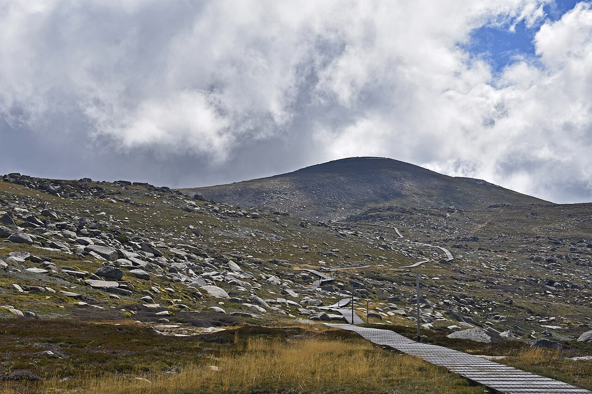

Kosciuszko National Park from Jindabyne · 5-day family itinerary
Five summer days based in Jindabyne, in New South Wales’s Snowy Mountains, for a twelve-year-old and a nine-year-old. The hire car’s park pass is bought on the morning it first goes in, because here a day pass lasts 24 hours, not until midnight; the summit walk starts on the first chairlift, and every high day has a low-country swap.

Photo: Ymblanter, Mount Kosciuszko seen from Kosciuszko Walk, CC BY-SA 4.0, via Wikimedia Commons. Photographed in April; this plan runs in January.

Checked before you commit
This illustrative route flies into Canberra, which Visit NSW puts about two hours’ drive from Jindabyne, stays in Jindabyne and flies home from Canberra. NSW National Parks and Wildlife Service (NPWS) pages for Kosciuszko (park fees, day passes and their conditions of use, the Thredbo and Charlotte Pass summit walks, lookouts, Sawpit Creek, Bundilla, the junior ranger program, Snowy Region Visitor Centre and alpine safety) and Thredbo’s lift and walk pages were read on 17 November 2026. Nothing was booked.
One base, one airport, two park roads. Snowy Region Visitor Centre in Jindabyne sits outside the park; NPWS charges vehicle entry on the Alpine Way, towards Thredbo, and on Kosciuszko Road, towards Charlotte Pass. Visit NSW puts Thredbo about 30 minutes from Jindabyne in good conditions. We didn’t measure the drive to Charlotte Pass.
One big day, then smaller ones. The longest walk is the 13-kilometre Thredbo summit return on Day 2, with a turnaround at Kosciuszko lookout. Day 3 is a lookout and an out-and-back walk you can cut short, and Day 4 is a 90-minute ranger session and a 2-kilometre loop.
We didn’t check flights, the hire car, accommodation, the Thredbo lift price or January lift hours. The A$17 vehicle fee is what NPWS showed on 17 November 2026. The junior ranger session needs a booking; we didn’t check whether places remain. A booking-hub link doesn’t hold a room, a car or a lift ticket.
Planning boundary: dates are illustrative; the worked example runs Monday 11 to Friday 15 January 2027, five days counted from the flight in to the flight home. NPWS lists junior ranger sessions at Sawpit Creek on 7, 14 and 21 January 2027, which is why the plan sits in that week.
NPWS says weather in the Snowy Mountains can change quickly, snow can fall at any time, and mobile reception in the park is limited. Alfred doesn’t check park alerts, lift status, fire danger or weather, and doesn’t buy park passes. A booking-hub link doesn’t prove a booking.
Route and family-coordination brief
Party: two adults, a twelve-year-old and a nine-year-old. Base: Jindabyne. Pace: one long walking day, then shorter ones. Assumption: a flight into Canberra and a hire car collected there; we didn’t check routes, flights or fares.
Pass rule: NPWS says anyone driving into Kosciuszko needs a valid pass for the vehicle. Outside the winter peak it is A$17 per vehicle, and NPWS says Kosciuszko day passes run for 24 hours, where most fee-collecting NSW parks charge by the calendar day. Walkers, cyclists and public-transport passengers don’t need one; bus passengers pay a per-person fee instead.
Hire-car rule: NPWS’s conditions of use say its annual passes aren’t valid for rental cars, and a day pass is tied to the registration plate you enter when you buy it. So this family buys a multi-day pass for the hire car at Snowy Region Visitor Centre at 8:30 am on Day 2, the first morning the car goes into the park, not on arrival day.
Payment rule: NPWS entry stations take Visa or Mastercard, not cash; Snowy Region Visitor Centre also takes cash. NPWS’s Park’nPay app works in the Thredbo-Perisher area, but reception in the park is limited, so we’d buy in Jindabyne rather than at the car park.
Alpine rule: NPWS asks walkers to carry drinking water, a hat, sunscreen and clothes for all weather, and to check the forecast and alerts before setting out. It lends personal locator beacons free at Snowy Region Visitor Centre and recommends a trip intention form, which goes to your own emergency contact, not to NPWS.
Left out: the 18.6-kilometre Charlotte Pass summit walk and the Main Range walk, both long; cycling and the Thredbo mountain bike park; the Alpine Way west of Thredbo, which NPWS calls steep, narrow and winding; Yarrangobilly Caves, in the park’s north; guided and night walks; fishing; and camping.
In Alfred, while the trip is still Planning, you can keep or change the hotel and then the flights Alfred picked, and browse the activity and meal carousels. Their Like toggles aren’t saved, so a like isn’t a record of a decision. We did not test whether city search offers Jindabyne, or whether Alfred plans flights into Canberra.
Day 1 — Fly into Canberra, drive to Jindabyne, no pass yet
Fly into Canberra and collect the hire car you booked. Visit NSW puts Jindabyne about two hours’ drive away. We haven’t checked flight times, so the day stays open until you land.
Drive to Jindabyne and buy food and water for the week. If you arrive before 5 pm, stop at Snowy Region Visitor Centre, which NPWS says is outside the park and opens 8:30 am to 5 pm daily. Ask about conditions, pick up maps, and borrow a free personal locator beacon for tomorrow. Don’t buy the park pass yet; a 24-hour pass bought now would end tomorrow afternoon.
Fallback: if the flight lands late, skip the visitor centre; it opens at 8:30 am tomorrow.
Live-check: your flight time; the hire car pick-up; NPWS alerts for Kosciuszko.
Day 2 — Thredbo chairlift and the walkway to the summit
At 8:30 am, buy a multi-day vehicle pass for the hire car at Snowy Region Visitor Centre, giving the registration plate exactly as it appears on the car. Fill in a trip intention form for your emergency contact. Then drive the Alpine Way to Thredbo, which Visit NSW puts about 30 minutes away in good conditions.
Ride the Kosciuszko Express chairlift, about 15 minutes, which Thredbo’s November status page listed as opening at 9 am. The Kosciuszko walk is 13 kilometres return, 4 to 5 hours by NPWS’s estimate, Grade 3, with many steps and short steep hills. Thredbo says most of it is on a raised walkway; NPWS says the steel mesh may be sharp and running isn’t permitted. Kosciuszko lookout comes at about 2 kilometres, Cootapatamba lookout, above Australia’s highest lake, at about 4.
The track crosses the headwaters of the Snowy River and climbs to Rawson Pass, then gradually to the 2,228-metre summit. By our arithmetic, if you start walking at about 9:15 am and allow Thredbo’s upper estimate of six hours return, turning for home by midday brings you back to the top of the lift around 3 pm, before its listed 4 pm close. Turn at Kosciuszko lookout instead, which Thredbo puts at 1 to 2 hours return, if the nine-year-old is flagging.
Fallback: if the lift is on a wind, lightning or visibility hold, swap with Day 3 and walk the Thredbo River track from the village golf course, 4 kilometres one way and Grade 4, turning back whenever you like.
Live-check: Thredbo lift status; the forecast for the tops, since NPWS says snow can fall at any time; NPWS alerts.
Day 3 — Charlotte Pass lookout and the old road towards the Snowy River
Drive Kosciuszko Road to its end at Charlotte Pass. The lookout has step-free access from the road along a stone-paved ramp, views across the Snowy River to Australia’s highest peaks, and an accessible toilet at the turning circle. We didn’t measure the drive from Jindabyne.
Walk out along the Mount Kosciuszko Summit walk, which follows the old road. NPWS says the Snowy River, about 4.5 kilometres from Charlotte Pass, is a scenic picnic spot. Turn back there, or sooner; going to the river and back is about 9 kilometres by our arithmetic. Mountain bikes are allowed on this section, and NPWS asks riders to give way to walkers.
A quiet afternoon in Jindabyne.
Fallback: if the tops are in cloud or wind, keep to the lookout, then drive back down for the Sawpit walking track (Day 4) a day early.
Live-check: NPWS alerts; the forecast; your pass’s end time on the receipt.
Day 4 — Junior ranger at Sawpit Creek, then the Thredbo River at Bundilla
If you booked it, the NPWS junior ranger session “Building paths at Sawpit Creek” runs 9:30 to 11 am on Thursday 14 January 2027 at Sawpit Creek picnic area: 90 minutes on how walking tracks protect habitat, ending with the children building miniature track systems. NPWS lists it for children aged 5 and over at A$11 a child, with accompanying adults free, and bookings required.
Walk the Sawpit walking track, a 2-kilometre loop of 45 minutes to 1 hour 15 from the picnic area along Sawpit Creek, where NPWS says you are likely to see kangaroos if you walk quietly. Picnic or barbecue at Sawpit Creek picnic area; NPWS suggests insect repellent for summer flies.
Bundilla accessible track, 1.1 kilometres return from Skitube Carpark D, Grade 1, along the Thredbo River to historic Bullocks Hut, which has an accessible toilet. NPWS mentions places to stop for a swim; there is no mention of lifeguards, so treat the river as a paddle with an adult alongside.
Fallback: if you didn’t get a place, start with the Sawpit walking track and take the picnic area’s short Waterfall walk as well.
Live-check: the booking confirmation; NPWS alerts; the forecast.
Day 5 — Frogs at the visitor centre, then the flight home
Your pass lapses this morning if you bought three days on Tuesday, and you don’t need one today. Snowy Region Visitor Centre is outside the park, with no entry fee, and NPWS says you can spot a corroboree frog in its display. NPWS says the endangered southern corroboree frog is found only in Kosciuszko National Park.
Drive to Canberra, about two hours by Visit NSW’s estimate, and return the car.
Fallback: if the flight leaves early, skip the visitor centre and leave Jindabyne straight after breakfast.
Live-check: your flight time; the car return time.
Planning notes
Related travel note: A day pass runs on the clock, not the calendar.
Dates are illustrative. At decision time, recheck NPWS alerts for Kosciuszko, the vehicle fee and pass options, Thredbo’s lift status and January hours, the junior ranger booking, Snowy Region Visitor Centre’s hours, the forecast, your flights into Canberra, the car-hire pick-up and return, and your accommodation booking.
Why the pass waits for Day 2. A 24-hour pass bought on Monday afternoon would run out on Tuesday afternoon, in the middle of the summit walk. Bought at 8:30 am on Tuesday, a three-day pass, if that is what you choose at the counter, would cover Tuesday, Wednesday and Thursday and lapse on Friday morning, the day you leave. We didn’t find a published multi-day price; ask the visitor centre.
The chairlift is a separate ticket. NPWS says the Thredbo walk starts at the top of the Kosciuszko Express chairlift, a 15-minute ride with its own fee, and sends you to Thredbo for prices and hours. Thredbo’s status page listed the chairlift as 9 am to 4 pm on 16 November 2026, and Thredbo says all its lifts are weather dependent. Recheck both for January.
What we couldn’t confirm. We didn’t read the Bureau of Meteorology forecast or a fire danger rating; NPWS says some tracks may close for fire danger or poor weather, so check alerts each morning. NPWS lists the Sawpit walking track as short and easy but also as “Hard” for accessibility. NPWS gives the walk from Thredbo as 4 to 5 hours and Thredbo as 4 to 6.
If the summit day goes wrong. Merritts Nature Track runs from the top of the chairlift down to Thredbo Village; NPWS calls it a difficult 4-kilometre track, 2 to 3 hours going uphill. It is a way down if the lift stops, not part of the plan.
Plan a trip
Start with your people, dates and pace, then review the editable plan before booking.
Plan a trip